Array Modifier¶
The Array modifier creates an array of copies of the base object, with each copy being offset from the previous one in any of a number of possible ways. Vertices in adjacent copies can be merged if they are nearby, allowing smooth subsurf frameworks to be generated.
This modifier can be useful when combined with tileable meshes for quickly developing large scenes. It is also useful for creating complex repetitive shapes.
Multiple array modifiers may be active for an object at the same time (e.g. to create complex three dimensional constructs).
Options¶
Array modifier.
- Fit Type menu
Controls how the length of the array is determined. There are three choices, activating respectively the display of the Curve, Length or Count settings explained below:.
- Fit Curve
- Generates enough copies to fit within the length of the curve object specified in Curve.
- Fit Length
- Generates enough copies to fit within the fixed length given by Length.
- Fixed Count
- Generates the number of copies specified in Count.
- Curve
- The Curve object to use for Fit Curve.
- Length
- The length to use for Fit Length.
- Count
- The number of duplicates to use for Fixed Count.
Note
- Both Fit Curve and Fit Length use the local coordinate system size of the base object, which means that scaling the base object in 物体模式 will not change the number of copies generated by the Array modifier.
- Fit Length uses the local coordinate system length of the curve, which means that scaling the curve in 物体模式 will not change the number of copies generated by the Array modifier.
- Applying the scale with
Ctrl-Acan be useful for each one.
- Constant Offset, X, Y, Z
- Adds a constant translation component to the duplicate object’s offset. X, Y and Z constant components can be specified.
- Relative Offset, X, Y, Z
- 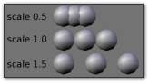
Relative offset example.
Adds a translation equal to the object’s bounding box size along each axis, multiplied by a scaling factor, to the offset. X, Y and Z scaling factors can be specified.
- Object Offset
- 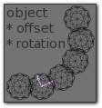
Object offset example.
Adds a transformation taken from an object (relative to the current object) to the offset. It is good practice to use an Empty object centered or near to the initial object. E.g. by rotating this Empty a circle or helix of objects can be created.
- Merge
- If enabled, vertices in each copy will be merged with vertices in the next copy that are within the given Distance.
- First Last
If enabled and Merge is enabled, vertices in the first copy will be merged with vertices in the last copy (this is useful for circular objects).
First Last merge example.¶ 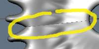Subsurf discontinuity caused by not merging vertices between first and last copies (First Last off).
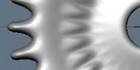Subsurf discontinuity eliminated by merging vertices between first and last copies (First Last on).
- Distance
- Controls the merge distance for Merge.
- Start Cap / End Cap
This allows either endpoints of the array to have a different mesh subsisted.
For the start: as if it was in position -1, i.e. one “array step” before the first “regular” array copy. For the end: as if it was in position n + 1, i.e. one “array step” after the last “regular” array copy.
When Merge is activated, and the cap vertices are within the distance threshold, they will be merged.
Note
The start/end cap objects currently do not support the First Last option.
Hints¶
Offset Calculation¶
The transformation applied from one copy to the next is calculated as the sum of the three different components (Relative, Constant and Object), all of which can be enabled/disabled independently of the others. This allows, for example, a relative offset of (1.0, 0.0, 0.0) and a constant offset of (0.1, 0.0, 0.0), giving an array of objects neatly spaced along the X axis with a constant 0.1 units between them, whatever the original object’s size.
例子s¶
Mechanical¶
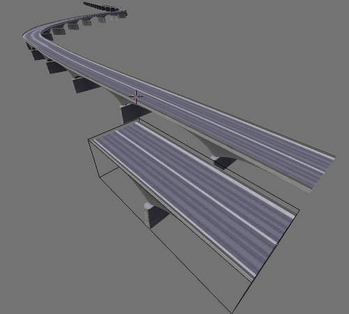
A bridge made from a tileable mesh. |
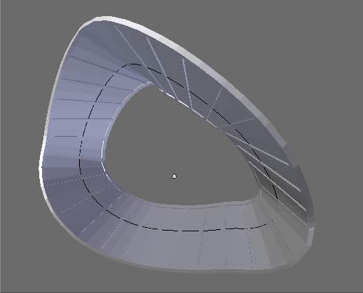
A track. Sample blend-file |
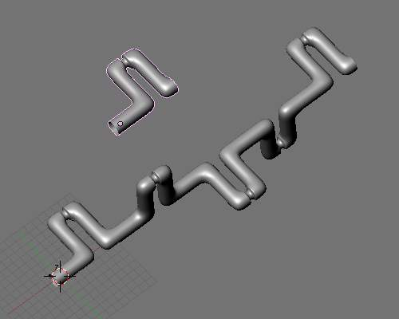
A crankshaft. Sample blend-file |
|
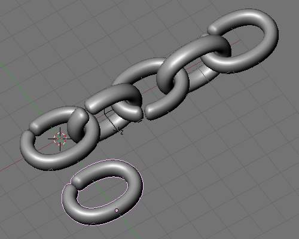
A chain created from a single link. Sample blend-file |
{kind=link}
{kind=link}
{kind=link}
{kind=link}
{kind=link}
Fractal¶
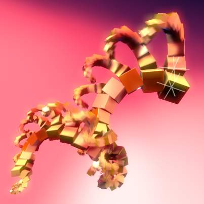
Multi-level array animated with motion blur. |
|
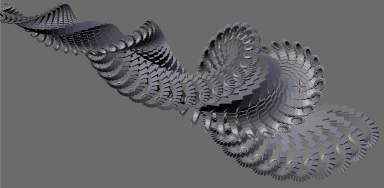
A fractal fern image created with two array modifiers and one mirror applied to a cube. |
{kind=link}
{kind=link}
{kind=link}
Organic¶
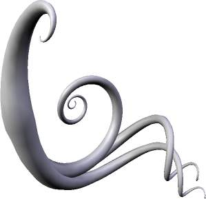
Subsurfed cube array with one object offset, four cubes and a high vertex merge setting to give the effect of skinning. |
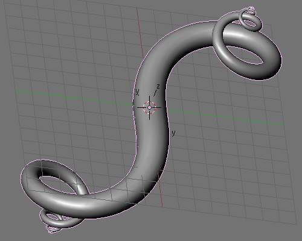
A double spiral created with two array modifiers and one subsurf modifier applied to a cube. As above, the vertex merge threshold is set very high to give the effect of skinning. Sample blend-file |
{kind=link}
{kind=link}
{kind=link}
A tentacle created with an Array modifier followed by a Curve modifier. The segment in the foreground is the base mesh for the tentacle; the tentacle is capped by two specially-modeled objects deformed by the same Curve object as the main part of the tentacle. Sample blend-file
Tutorials¶
The ‘Double Helix’ tutorial explains the Array modifier. It is for an old Blender Version (2.44) but except for the keyboard shortcuts it is still valid.